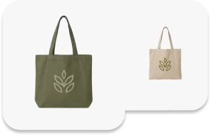

Du betaler
Du bruger dit dankort som du plejer
En del af Nexi Group


Vi gør det nemt at træffe bevidste valg i hverdagen. Med Øremærket kan du være med til at gøre en forskel for naturen hver gang du betaler.
Vores mission
Du bruger dit dankort som du plejer

Vi øremærker et beløb fra dine køb.

Pengene går til projekter som beskytter naturen.
Dankort Øremærket er et samarbejde med Naturfonden. Sammen skaber vi en grønnere fremtid.
Dankort er Danmarks mest brugte betalingskort. Vi arbejder for at sikre, nemme og ansvarlige betalingsløsninger for alle.
Naturfonden genopretter og beskytter dansk natur til gavn for både mennesker, dyr og klima.
Vores mulepose er produceret med fibre fra tang – en overset spildressource fra havet.
Ved at støtte innovative producenter, der genanvender naturlige materialer, er vi med til at skabe produkter med omtanke for både miljø og fremtid.


Dine betalinger er altid beskyttede.

Se præcis, hvordan dit bidrag gør en forskel.

Vi støtter projekter, der beskytter naturen.

Små handlinger skaber store forandringer.